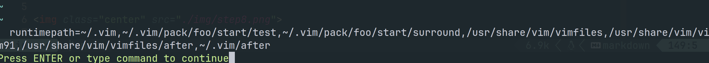

现代 Neovim 折腾指北
什么是 Neovim
Neovim 是 Vim 的一个
fork, 在 Vim 支持多线程的补丁被拒绝后，Neovim 项目于 2014 年启动。
- Neovim 全面兼容 Vim9.0 之前的配置, 只不过配置文件放置的位置不同
- Neovim:
~/.config/nvim/init.[lua|vim] - Vim:
~/.vim/vimrc或者~/.vimrc
- Neovim:
- Neovim 内置对 Lsp协议 (语法补全) 和 Treesitter(语法高亮) 的支持
- Neovim 可以使用
lua脚本语言进行配置，而 Vim 只能使用vimL
ps: 在之后所提到的命令，如无特殊说明，Neovim 和 Vim 均适用
Neovim 插件系统介绍
加载插件实际上在干什么？
- 加载 Neovim 的 脚本文件
set runtimepath会列出 Neovim 下查找脚本的路径- 在运行时，Neovim 自动加载这些路径下的
.vim.nvim.lua文件

如何加载插件
- Vim8.0 之后提供原生的加载第三方插件的功能
~/.vim/pack/[foobar]/start: 自动加载~/.vim/pack/[foobar]/opt: 按需加载
需要手动 clone, upgrade 😜, 不方便
- 使用包管理器
vim-plug适用于 Vim 和 Neovimpacker.nvim仅适用于 Neovimlazy.nvim仅适用于 Neovim (Packer 作者亲情推荐)
代码补全
代码补全基础: LSP 介绍
语言服务器协议（LSP）是一种基于 JSON-RPC 的开放协议，用于源代码编辑器或集成开发环境（IDE）与提供 "语言智能工具 "的服务器之间 编程语言特定功能，如代码自动补全、语法高亮、警告和错误标记以及重构例程。
LSP 最初是微软为Vscode开发的，现在已经成为开放标准
- 在编辑器和编程语言之间加了一层抽象, 一个不恰当的比方
- NEMU对应编辑器
- 各种架构对应各种语言
- LSP对应AM
- 这样，编辑器只要支持 LSP 协议，那就可以复用各个语言的语言服务器来提供高级特性

Neovim 下进行代码补全
使用插件提供的 LSP 支持
- coc.nvim(不支持 Metals):
- 基于NodeJS 的适用于Vim8, Neovim 的Vim 智能补全插件, 配置风格类似Vscode
- 虽然coc 是 vim 的一个插件，但是他也有自己的插件系统
使用 Neovim 内置的 LSP
- nvim-lspconfig, mason.nvim, mason-lspconfig.nvim (不支持 metals):
nvim-lspconfig用于配置 Neovim LSPmason用于快速下载 语言服务器mason-lspconfig用于兼容 nvim-lspconfig 和 mason
- nvim-metals: (可以和上面的插件并存) 单独为 metals 提供服务
基本移动
键位映射
^ ^
k i
< h l > --> < j l >
j k
v v
配置代码
noremap <silent> i k
noremap <silent> j h
noremap <silent> k j
noremap <silent> z i
这里提供 vimL 的配置方式，lua 的配置方法请看代码仓库/文档
窗口管理
键位映射
s+u/d/l/r: 向上/下/左/右 分屏<Space>+ 方向键: 切换光标所在屏幕
配置代码
map sr :set splitright<CR>:vsplit<CR>
map sl :set nosplitright<CR>:vsplit<CR>
map su :set nosplitbelow<CR>:split<CR>
map sd :set splitbelow<CR>:split<CR>
noremap <SPACE><up> <C-w>k
noremap <SPACE><left> <C-w>h
noremap <SPACE><down> <C-w>j
noremap <SPACE><right> <C-w>l
Tab 管理
键位映射
<space> + n新建一个tabth访问右侧的 tabtl访问左侧的 tab
配置代码
map <leader>n :tabnew<CR>
map tl :tabnext<CR>
map th :tabprevious<CR>
查找
Telescope: 快速查找
C-p查找文件C-f查找文件内容C-h查找历史文件C-l查找内置命令
LSP
gd跳转到定义<leader>-跳转到上一个诊断<leader>+跳转到下一个诊断<leader>h查看文档<leader>rn重命名
Metals 配置
想要 config from scratch?
开箱即用的 Neovim 配置框架
Lazyvim- 没错，就是
Lazy.nvim包管理器的作者维护的
- 没错，就是
AstroNvim- 社区相当活跃
就想写个 chisel, 别整这么多有的没得
支持 nvim-metals 插件的 minimum-configruation
- 仅包含 lsp, 语法高亮, 和一个文件树插件
plugin/
catppuccin.lua --> 主题
completion.lua
lsp-config.lua
none-ls.lua
metals.lua ---> lsp
neotree.lua ---> 文件树
telescope.lua ---> 查找
treesitter.lua ---> 语法高亮
彩蛋
小 tips
%可以跳转到另一个配对括号:term可以在 Neovim 下打开终端- 在 insert 模式下按
C-w可以向前删除一个 word :echo expand('%:p')可以打印当前文件的绝对文件路径